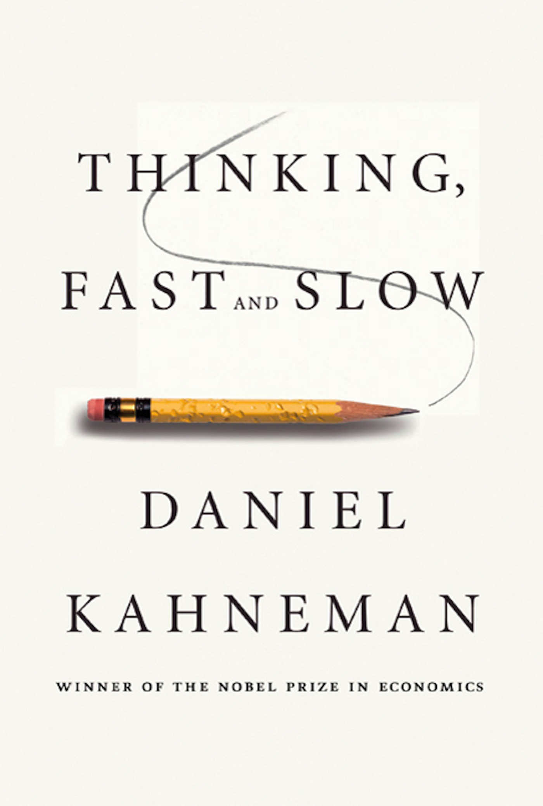
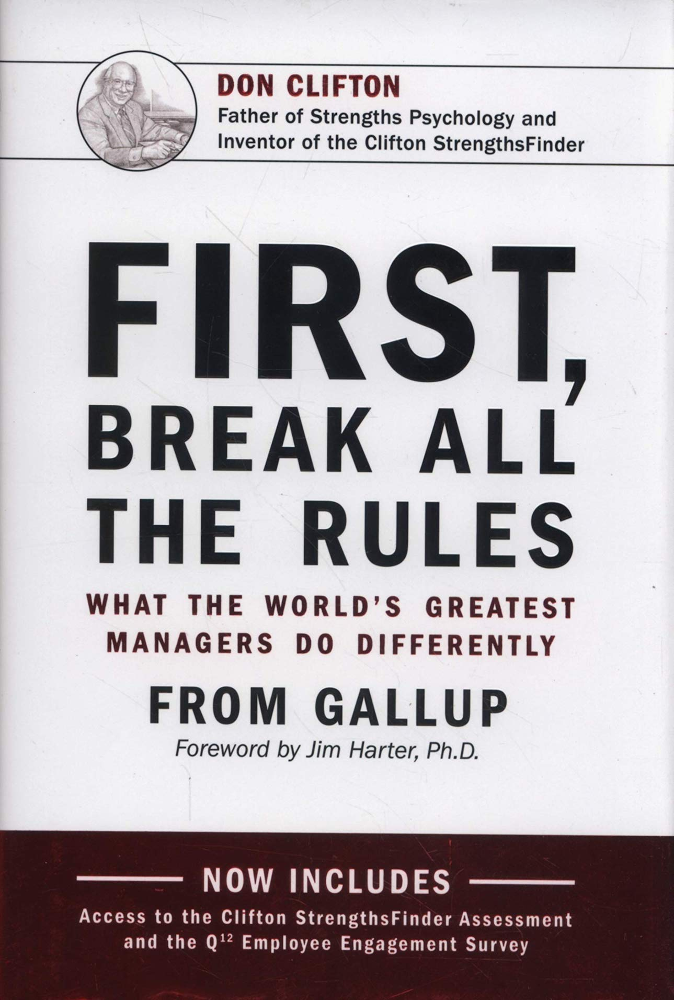

Maxime Lagresle
Product Manager | Student @LeWagon
Thirsty for new knowledge and fervent believer in life-long learning.
Read more...
My 3 favorite books

|
Principles - Ray Dalio
|
|  |
Thinking Fast and Slow - Daniel Kahneman
|
|  |
First Break All The Rules - Gallup
|
Favorite Quote
"If you can think for yourself while being open-minded in a clearheaded way to find out what is best for you to do, and if you can summon up the courage to do it, you will make the most of your life." - Ray Dalio